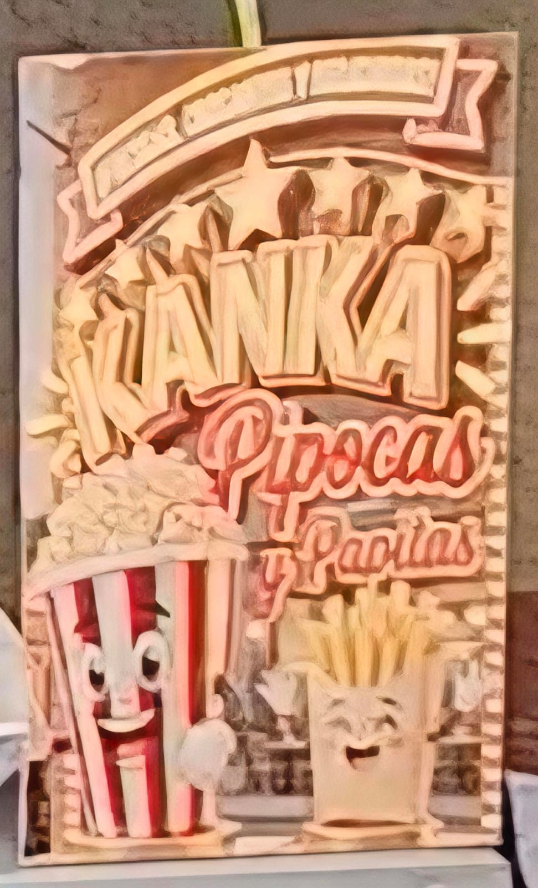

Información General
- Emprendimiento: kanka
- Productos: Hace pipocas, papas fritas con distintos savores
- Ubicación: afuera del itsec
- Numero de contacto:: 73434603
Descripción del Emprendimiento
K'anka es un emprendimiento gastronómico ubicado en las inmediaciones exteriores del instituto, enfocado en la elaboración y venta de snacks variados. Se destacan por ofrecer papas fritas artesanales con sazones especiales (como papas picantes y papas al romero) y una gran selección de pipocas para todos los gustos: dulces, saladas tradicionales y pipocas con mantequilla. Su atención rápida y la calidad de sus empaques convierten a este estand en una opción ideal de aperitivo durante el evento.
Muestra Fotográfica
 Puesto de exposición
Puesto de exposición
 Muestra de productos
Muestra de productos
Precentacion del producto